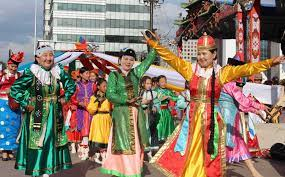
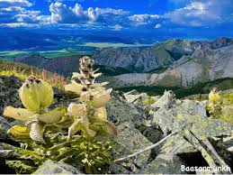

Geografia da Mongólia
A Mongólia é uma terra de contrastes impressionantes,
localizada no coração da Ásia Central, entre as imensas fronteiras da Rússia ao norte e da China ao sul.
Com uma vasta extensão territorial de cerca de 1,56 milhão de km², o país é marcado por um relevo
predominantemente
montanhoso, vastas estepes abertas, desertos áridos como o famoso Deserto de Gobi, e planícies infinitas que
parecem não
ter fim. O clima é rigorosamente continental, caracterizado por invernos extremamente frios, com temperaturas que
podem
despencar para níveis congelantes, e verões curtos, porém intensamente quentes. Essa combinação única de terreno e
clima
molda uma vegetação esparsa, composta principalmente por estepes e regiões semiáridas, onde a vida selvagem
adaptou-se
para sobreviver em condições desafiadoras. A geografia da Mongólia não só define seu ambiente natural, mas também
influencia profundamente a cultura e o estilo de vida dos seus habitantes, muitos dos quais ainda mantêm tradições
nômades que remontam a séculos atrás.

Características Principais
Área
Com uma impressionante extensão territorial de aproximadamente 1,56 milhão de quilômetros quadrados, a Mongólia
ocupa uma posição de destaque entre os maiores países do mundo. Essa vasta área abrange desde desertos áridos até
montanhas majestosas, refletindo uma diversidade geográfica rica e única que influencia diretamente o clima, a
vegetação e o modo de vida das populações locais.
População
A Mongólia é um país localizado na Ásia, entre a Rússia e a China. Apesar de ter um território muito grande, sua
população é relativamente pequena — cerca de 3,4 milhões de habitantes. Isso faz da Mongólia um dos países menos
densamente povoados do mundo.
Grande parte da população vive na capital, Ulan Bator, enquanto o restante está espalhado por áreas rurais e
regiões de estepes. Muitos mongóis ainda mantêm um estilo de vida tradicional, com pastoreio nômade, cuidando de
animais como cavalos, ovelhas e camelos.
A maioria das pessoas na Mongólia pertence ao grupo étnico khalkha mongol e a religião predominante é o budismo
tibetano. A cultura mongol é fortemente influenciada pelas tradições antigas do império de Genghis Khan.

Capital
A capital da Mongólia se chama Ulan Bator (ou Ulaanbaatar, na língua local). Ela é a maior cidade do país e onde
vive quase metade da população mongol. Ulan Bator é o centro político, cultural e econômico da Mongólia.
A cidade está localizada em uma região montanhosa e fria, com invernos muito rigorosos. No inverno, as
temperaturas podem chegar a -30 °C!
Apesar do frio, Ulan Bator é cheia de vida, com mercados, museus, templos budistas e edifícios modernos. É também
um importante ponto de conexão entre o estilo de vida tradicional mongol e a vida urbana moderna.
Relevo
O relevo da Mongólia é bastante variado e marcado por paisagens naturais impressionantes. O país tem muitas
montanhas, planaltos e vastas planícies. No oeste, ficam as montanhas Altai, com os picos mais altos do país. Já
no centro e no leste, há planícies e vales abertos, ideais para a criação de animais.
Ao sul da Mongólia está o famoso Deserto de Gobi, uma das regiões mais secas e áridas da Ásia, com dunas, rochas e
poucos rios. A maior parte do território mongol está acima dos 1.000 metros de altitude, o que faz com que o país
tenha um clima frio e seco.
Clima
A Mongólia tem um clima frio e seco, conhecido como clima continental. Isso significa que os invernos são longos e
muito gelados, com temperaturas que podem chegar a -30 °C em algumas regiões. Os verões são curtos, mas podem ser
quentes durante o dia, com noites mais frias.
O país tem pouca chuva ao longo do ano, e o Deserto de Gobi, no sul, é uma das áreas mais secas. Devido à grande
variação de temperatura entre o dia e a noite, o clima na Mongólia pode mudar rapidamente.
Deserto de Gobi
O Deserto de Gobi é um dos maiores desertos da Ásia e fica no sul da Mongólia e no norte da China. Diferente do
que muitos pensam, o Gobi não é só areia — ele tem também regiões rochosas, montanhas baixas e áreas com pouca
vegetação.
O clima no Gobi é muito seco e pode ser extremamente quente no verão e muito frio no inverno, com temperaturas que
vão de mais de 40 °C a -30 °C!
Apesar das condições difíceis, o deserto abriga animais como camelos, raposas e alguns répteis, além de ter sido
um local importante para a Rota da Seda e para descobertas de fósseis de dinossauros.
Vegetação
A vegetação da Mongólia varia bastante por causa do clima e do relevo do país. Nas regiões mais secas, como o
Deserto de Gobi, a vegetação é muito escassa, com plantas adaptadas à pouca água, como cactos e arbustos
resistentes.
Nas áreas de planície e nas estepes, a vegetação é composta principalmente por gramíneas e arbustos baixos, que
servem de pasto para os animais que vivem no país, como cavalos, ovelhas e camelos.
Nas regiões montanhosas e nas partes mais frias do norte, há florestas de coníferas, com árvores como o pinheiro e
o abeto. A diversidade da vegetação da Mongólia reflete a variedade de seus ambientes naturais.

Biodiversidade
A Mongólia possui uma biodiversidade rica e única, graças à variedade de seus ecossistemas, que vão desde desertos
até montanhas e estepes. O país é lar de muitos animais selvagens, como o leopardo-das-neves, o camelo-bactriano,
o urso-pardo e o golfinho do rio Amur.
Além dos animais, a Mongólia tem uma grande diversidade de plantas adaptadas aos climas extremos, desde gramíneas
nas estepes até árvores nas regiões montanhosas. Essa variedade ajuda a manter o equilíbrio ambiental e a
sustentar a vida dos povos que vivem ali.
Por ser um território pouco habitado, a Mongólia ainda preserva grandes áreas naturais, importantes para a
conservação da biodiversidade da Ásia.
Plantas
A vegetação da Mongólia é adaptada ao clima frio e seco do país. Nas vastas estepes, predominam plantas
resistentes como gramíneas, que servem de alimento para os animais pastadores. Também existem muitos arbustos
baixos e plantas herbáceas que conseguem sobreviver com pouca água.
Nas regiões montanhosas, crescem árvores como o pinheiro, o abeto e o bétula, que formam florestas de coníferas.
No deserto de Gobi, as plantas são raras, mas algumas espécies, como cactos e arbustos resistentes, conseguem
sobreviver em condições muito difíceis.
Essas plantas são essenciais para o equilíbrio do ecossistema da Mongólia, ajudando a proteger o solo e a
sustentar a vida animal.
Animais
A Mongólia é um país com uma natureza vasta e diversa, que abriga muitos animais adaptados ao seu clima frio e às
suas paisagens abertas. Entre os animais mais conhecidos estão o cavalo mongol, famoso por sua resistência e
importância na cultura local, e o camelo-bactriano, essencial para o transporte nas regiões desérticas. Além
disso, a Mongólia é lar de várias espécies selvagens, como o leopardo-das-neves, símbolo da conservação ambiental,
e o argali, uma espécie de carneiro selvagem. Esses animais representam a rica biodiversidade do país e a conexão
profunda entre a natureza e a vida dos mongóis.
Geopolitica
A Mongólia é um país estrategicamente localizado entre duas grandes potências: a Rússia ao norte e a China ao sul.
Essa posição geográfica influencia muito sua política externa, já que precisa manter boas relações com ambos os
vizinhos para garantir sua segurança e desenvolvimento econômico. A Mongólia também busca diversificar suas
parcerias internacionais, aproximando-se de países como os Estados Unidos, Japão e membros da União Europeia.
Internamente, o país enfrenta desafios como o desenvolvimento econômico sustentável e a gestão dos recursos
naturais, especialmente a mineração, que é vital para sua economia. A Mongólia tenta equilibrar interesses
regionais e globais para manter sua soberania e crescer no cenário internacional.
RETORNAR PARA A PAGINA PRINCIPAL